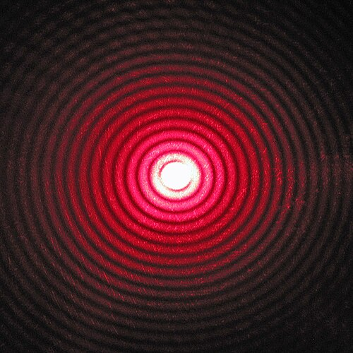

Fiziksel optikler; ayrıca optik, elektrik mühendisliği ve uygulamalı fizikte yaygın olarak kullanılan bir yaklaşımın adıdır. Bu bağlamda fiziksel optik, dalga etkilerini göz ardı eden geometrik optik ile kesin bir teori olan tam dalga elektromanyetizması arasında bir ara yöntemdir. "Fiziksel" sözcüğü, optiğin geometrik veya ışın optiklerinden daha fiziksel olduğu ve tam bir fiziksel teori olmadığı anlamına gelir.[1] Bu yaklaşım, bir yüzey üzerindeki alanı tahmin etmek ve daha sonra iletilen veya dağınık alanı hesaplamak için bu alanı yüzey üzerinde entegre etmek için ışın optiklerini kullanmaktan oluşur. Bu, Born yaklaşımına benzemektedir, çünkü problemin ayrıntıları bir pertürbasyon olarak ele alınmaktadır./p>
